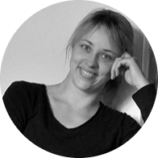

|  | Evelin TähtAutor, kogemusnõustaja, veebilehe arendaja ja tarkvara testija. |
Olen tasakaalukas ja usaldusväärne, hea pingetaluvusega meeskonnamängija. Töökas ja innukas uute teadmiste ja oskuste omandaja.
| Aeg | Ettevõte | Amet | Töökohustused |
|---|---|---|---|
| 01.2020-Tänaseni | Pappus OÜ | vabakutseline kogemusnõustaja | Firma asutaja, enda raamatute kirjastamine |
| 09.2022-12.2022 | Cerebrumhub | Noorem Testija | Manuaalne testimine kolmes projektis.Musta kasti, GUI ja API testimine |
| 01.2004-10.2022 | Icosagen Cell Factory/ Fit Biotech/ Eesti Biokeskus | Spetsialist/ vanemlaborant | Praktiline laboritöö biotehnoloogia firmades ja andmete analüüs ning raportite koostamine* |
*selle kohta leiab rohkem infot LinkedIn kontolt
| Eesti keel | ⭐⭐⭐⭐⭐ |
| Inglise keel | ⭐⭐⭐⭐⭐ |
| Vene keel | ⭐⭐⭐ |
| Saksa keel | ⭐⭐ |